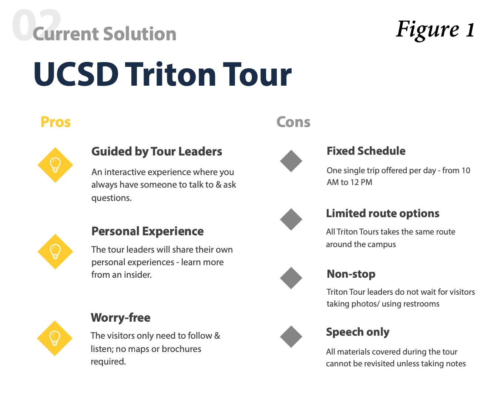
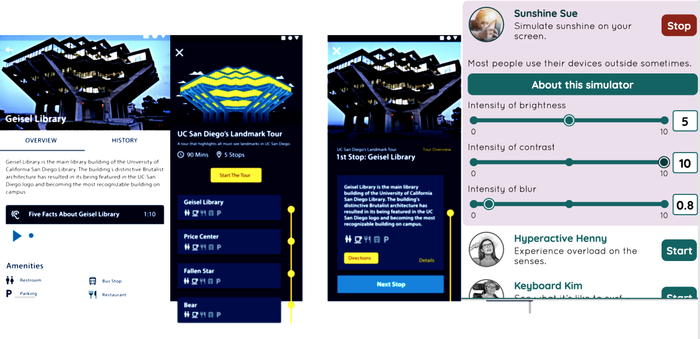
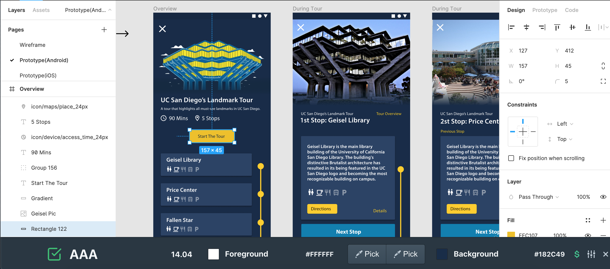

A Self-Guided Tour App for Everyone.
2 min read
Project In a Glance
Problem
Currently UC San Diego visitors don’t have much knowledge about the history and architecture of the campus and don’t have any all-around solution to navigate the campus flexibly and informatively.
How can we improve the touring experience in UCSD to better educate visitors about the campus landmarks?
Solution
We aim to provide visitors, prospective students, and alumni with an all-around campus tour solution, which is informative, customizable, accessible, and flexible, increasing familiarity and engagement with UC San Diego’s campus’ architectural landmarks.
Impact
Officially endorsed by and in collaboration with UC San Diego and San Diego Architecture Foundation (SDAF), Xplore, as a well-designed & deployed Android & iOS application, will be accepted as the official app for visiting UC San Diego.
Stakeholder
Our team is partnered with the San Diego Architecture Foundation (SDAF), a non-profit organization that is
dedicated to promoting and educating about the architecture and urban design of San Diego. SDAF built many of UCSD’s architectures and looks for a solution that interests more people to learn about the amazing architectures in UCSD.
Another major stakeholder is UCSD. We approached the vice Chancellor and pitched our project and the development plan with TripleC, a student-run project-based incubator on-campus. School officially endorsed us and in collaboration with us and SDAF, with a main interest in attracting more tourists, prospective students, and alumni to tour around campus and celebrating UCSD history.
My Role
UX researcher,
Product Designer.
Comparative Advantage
Our team compared across other 4 competitors.
Xplore UCSD App’s comparative advantage formed the best all-around solution to tour around UC San Diego.

Informativeness
Xplroe provided multimedia information to enrich content. We recruited the official student tour guide to record audio clips for each landmark detail page to recreate the personal experience of physical Triton Tour. In addition, we add video, architectural history, and stories to help user better familiarize with the sites.
Customizability
We understand that visitors have varied time constraints, interests, and goals to tour UCSD. Thus we have the feature to customize your own tour.
Flexibility
Xplore is flexible since its contextual awareness of user real-time location allows it to start and end on the spot. Also, we consciously avoided designing features that requires internet access since we want it to operate well even with poor internet access. (which is the case with UCSD wifi and many foreign tourists)
Accessibility
We desire inclusive design for Xplroe app since our users span all ages, physical and cognitive abilities. Thus, we made designs that are compliant with WCAG 2.1 guidelines and tested under undesired conditions where situational disability happens.
Iterative Design Process
Field study & Interviews
To investigate the missing opportunity of current solution, we signed up for the UCSD Campus Tour and personally experienced the interactions between the visitors and the TritonTour guides, where we observed a collections of painpoints (see Figure1 below). Afterwards we conducted interviews to understand the reasoning behind the Campus Tour’s structure.
Affinity Diagram
After we recorded our observations, we created an affinity-diagram to turn raw data into meaningful groups that are easy to identify patterns. It allows us to give other teams members(project manager and developers) an intuition of our findings and potentially grow empathy for users as motivations for the work.
Guerrilla Usability Test
We did Guerrilla usability testing is a rapid, low-cost method of quickly capturing user feedback for iterations. We tested usability of specific areas of the application and gave out task for users to navigate for.
(see testing notes below)
Microsoft Desirability Toolkit
We use this method to measure people's attitudes toward the visuals of the interface. We give users a list of product reaction words and asks them to select 3 that best describe the design. The recommended wordlist was slightly modified: “Cutting-edge” was replaced with “UC San Diego vibe”; “Expensive” was replaced with “Academic”.



High-Fi Screens &
User Flow

Onboarding & Login Page
A quick insight for visitors who are first time users to get familiar and confident with the app’s key features, providing greetings, essential information, and boost engagement within the first interaction with Xplore.
Homepage & Pre-set tour
Home page consists of collages of cards to easily access preset tours and places with different focuses. With the “Places Near You” Feature, you can start a tour anywhere, anytime on campus flexiblly. When clicking into a pre-set tour, users will be guided to tour around a recommended route using turn-by-turn navigation.

Place page & Search
Want to learn more yet do not need a tour? Switching tab to place page, users can directly access all landmark details. The landmark detail page contains multimedia content to better inform visitors and increase accessibility. We also recruited official Triton Tour student guide to record audio introduction for each site to re-create the intimate experience.
Xplore has a robust search function with filter by amentities feature to give users shortcut to find nearest bathrooms, restaurants, parking etc. without having to type. All it needed is recognizing the tag and tap to find easily.
Tour page & Customize tour
Besides the pre-set tours we recommended specifically to the highlights of different aspect of the campus, we prioritize the user need to fully customize their tour with own touring time constraints, places in mind, and specific interest (scenery, academic, etc).
Accessibility
“ A self-guided tour app for EVERYONE ”
As a product working towards the official touring app of one of the largest public universities who values diversity and inclusivity, Xplore made inclusivity efforts as we believe our product should NOT exclude anyone of having an enriching and flexible tour around the UCSD campus. It should be inviting and gives equal access to information to EVERYONE.
Current Solutions haven't addressed accessibility enough
One of the current solutions, the official self guieded campus tour PDF for visitors to refer to digitally, not only has tiny font size information packed in one page, but also failed the color blind test of Tritanopia (blue/yellow) as the highlighted route became indistinguishable and thus did not convey equal information to everyone. Also, even the in-person TritonTour guide only gives audio information, and the group tour routes they take aren't always wheelchair-friendly.

Inclusive design as a usability perspective
I don’t address accessibility as a politically right thing to do for the disabled. In fact, it uncovers new perspective for me to better address usability problems and drives me to consider diversity physical, cognitive abilities and use cases. Inclusive design is important magnifier of usability problem for me to consider not only permanent disability, but also temporary disability, and situational disability.
As a tour app, Xplore considered user scenarios where tourists use the app outdoors under the bright California sunlight (situational blindness), and try to interact with the mobile screen on the move / on a bumpy shuttle where users’ finger motion is less accurate which leads to misoperation ( situational touch impairment ). Thus, I used automated tools like Funkify Disability Simulator to test the readability under simulated strong sunlight, and trembling focus point to test if the CTA buttons are big enough.


Test if it’s usable for any user
Xplore corrected 100 percent of its color contrast issues to pass Web Content Accessibility Guidelines Level AA and AAA by 1st MVP Release in summer 2020. Also I checked to make sure it’s friendly for various types of color blind, such as tritanopia (red/green), deuteranomaly (green week), tritanopia (blue/yellow) etc.. Now Xplore has a beautiful and accessible design system with a vibrant color scheme which aligned with UC San Diego vibe.
Future & the Team
Short-term: Xplore has its 1st MVP release in end of June on Google Play store.
Mid-term: Well-designed & deployed Android & iOS application accepted as the official app for visiting UC San Diego.
Long-term: Our modularized design and scalable code made it possible to extend Xplore to other locations & cities as an open source software.
Lastly, shout out to my cross-functional team! It's been a nice quarter working aside with engineering team and pm to ideate, design, and build.